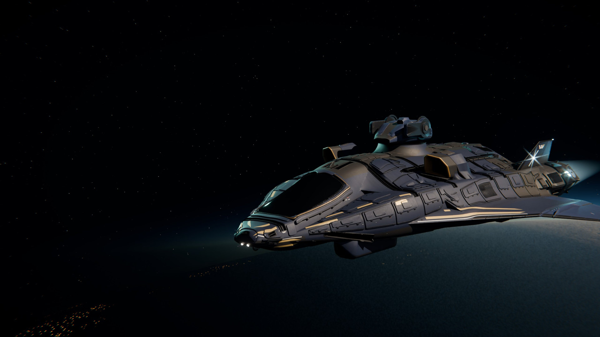
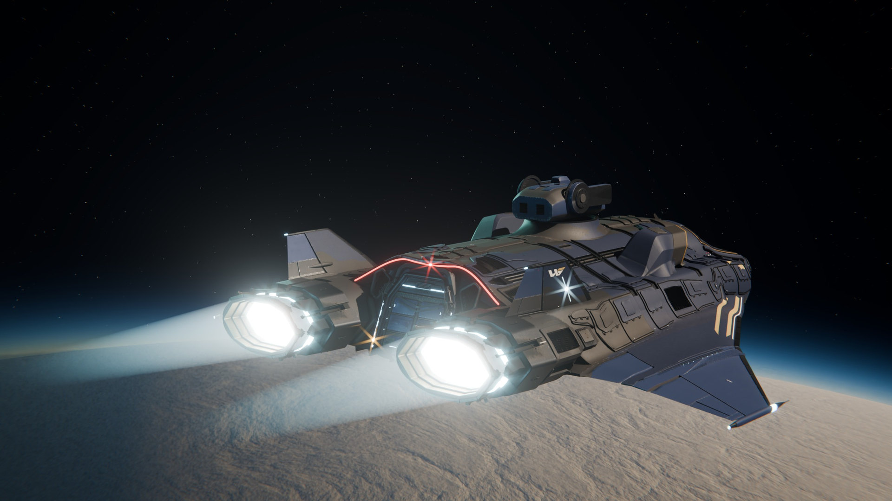
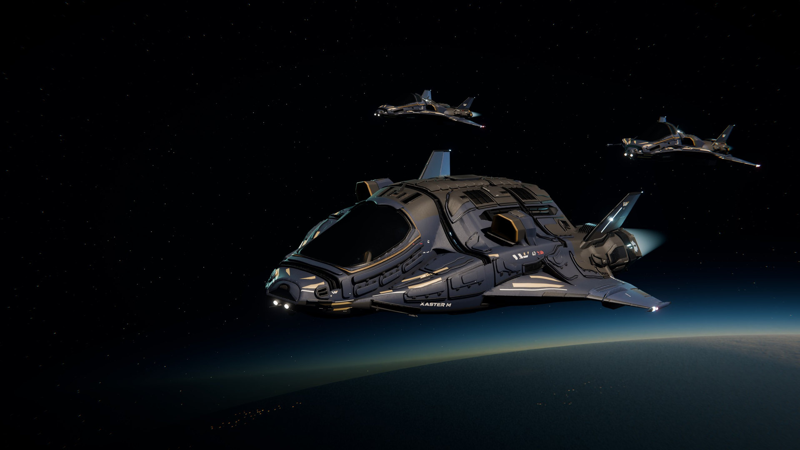
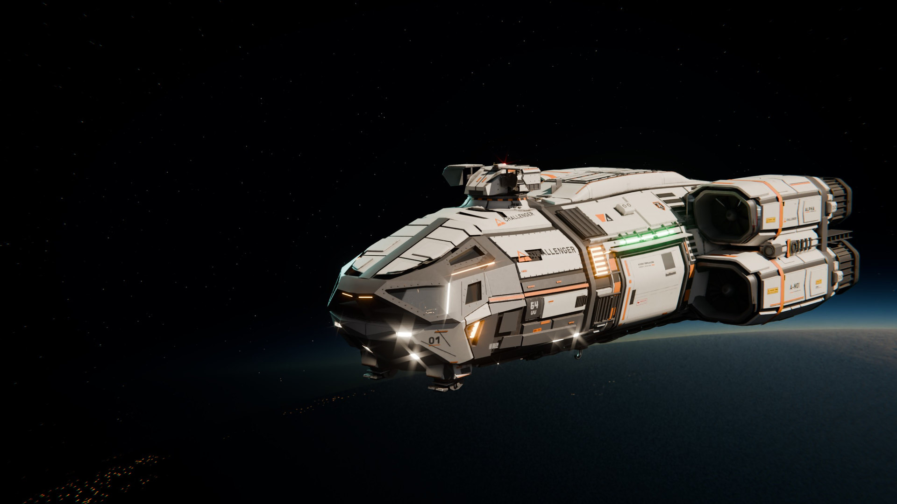
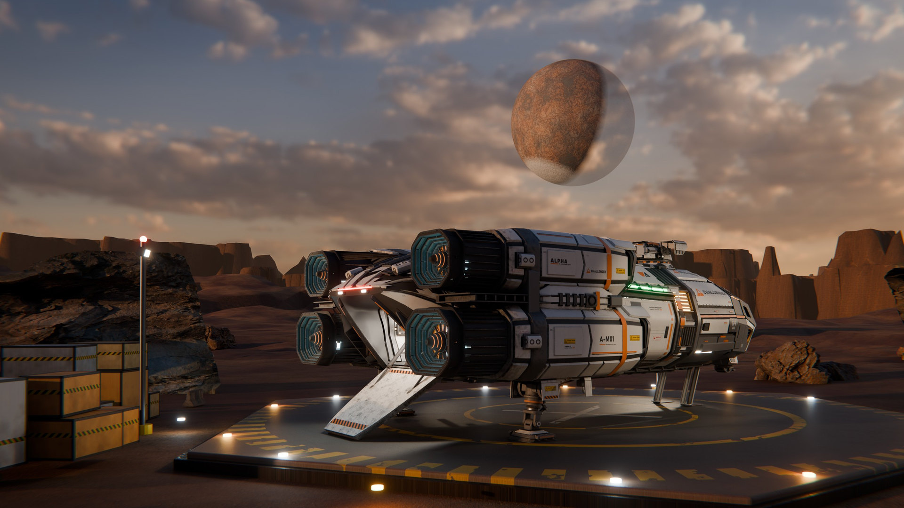
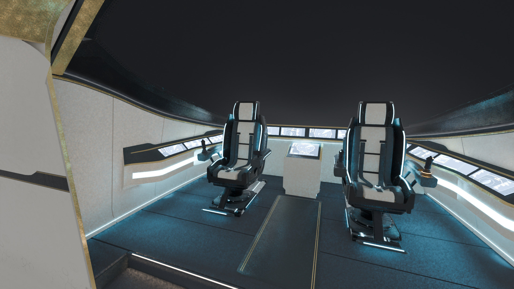

What it is
COLONIZED is a space survival MMORPG for PC: one persistent online universe on dedicated servers, where you survive, craft, build and fight in first or third person.
Year 47 E.A. In the Aurin system of the Parhelion galaxy, two factions born from the same colony fleet, the Zenith and the Nadir, keep a cold peace that is starting to crack.
It is in development. Applications for the closed alpha are open, and the alpha pre-release is planned for early 2027. The always-current version of every fact is COLONIZED in facts: if something is not there or here, it has not been announced.
Verified facts
| Name | COLONIZED, always written in capitals |
|---|---|
| Genre | Space survival MMORPG with realistic space simulation |
| Platform | PC, through Steam (the store page is not public yet) |
| Engine | Unreal Engine 5 (version 5.8 in the current build) |
| Status | In development; closed alpha applications open |
| Closed alpha pre-release | Early 2027 |
| Alpha participation | Free of charge; 18 or older; one place per person (alpha terms) |
| Release date | Not announced |
| Price and business model | Not announced |
| Created by | vanguille, an independent creator based in Spain |
| Ships shown | Seven, from three manufacturers, from 7.14 m to about 54.5 m long |
| Setting | Year 47 E.A., the Aurin system of the Parhelion galaxy |
| Novel | The Aurin Chronicle, a serialised novel set in the game's universe; Book One complete (26 pieces), free to read |
| Website | colonized.work, in English and Spanish |
| Official community | Discord |
| Contact | admin@colonized.work |
Confirmed in the game
- One persistent online universe on dedicated servers.
- Planets with atmosphere, and spherical worlds you walk on.
- Ships you can walk through, inside and out.
- Survival, base building and crafting.
- Combat in first and third person; shots resolved on the server with lag compensation.
- Fifteen worlds generated from their lore (four planets, ten moons and a captured asteroid), with terrain from real elevation data and physics and weather of their own; under visual review.
- Reputation with the five Global Guilds.
- A choice of side, the Zenith or the Nadir, when you enlist; it is permanent on the server.
Not announced yet
- Release date.
- Price and business model, including whether anything will be sold in the game.
- System requirements.
- Languages of the game.
- Platforms other than PC.
- Server regions and players per server.
- Public Steam store page.
- Name of the studio.
The same facts, machine-readable: facts.json.
The seven ships
| Ship | Manufacturer | Role | Length (m) | Mass (t) |
|---|---|---|---|---|
| William's XASTER X | William's | Single-seat escort snub | 7.14 | 4.2 |
| William's XASTER S | William's | Single-seat light fighter | 12.48 | 13.5 |
| William's XASTER M | William's | Habitable heavy fighter | 14.88 | 19 |
| William's XASTER L | William's | Habitable patrol ship | 18.03 | 29 |
| William's XASTER XL | William's | Heavy patrol ship with a gunner | 23.01 | 52 |
| CHALLENGER ALPHA M | Challenger | Industrial and field cargo dropship | 21.02 | — |
| MVG RVN-1000T Revenant | MVG Aerospace | Cargo dropship and gunship | 54.48 | — |
Specs subject to change during the alpha. «—» means the figure has not been published yet. William's, Challenger and MVG Aerospace are manufacturers inside the game's universe.
Renders
Six renders at 1920 × 1080, each under 300 KB. They are renders of the game's ship models, not in-game captures. Credit: Render: COLONIZED












Links
- Official website: colonized.work (en español)
- Apply for the closed alpha: colonized.work/alpha
- Fact sheet: COLONIZED in facts
- Open data: the Aurin system in numbers
- The novel: The Aurin Chronicle
- Press page on the website: colonized.work/press
- Community: Discord
How to use this kit
Editorial use is permitted: news, previews, articles, videos and streams about COLONIZED. Credit «COLONIZED» and, where possible, link to colonized.work. The facts can be quoted freely; please link to COLONIZED in facts so readers see the latest version. Full terms in LICENSE.
COLONIZED — Fact sheet. https://colonized.work/facts/ (facts as of 14 October 2026).
Kit de prensa en español
COLONIZED es un MMORPG de supervivencia espacial para PC, hecho con Unreal Engine 5: un universo online persistente, planetas con atmósfera y naves que se recorren por dentro.
Año 47 E.A. En el sistema Aurin de la galaxia Parhelion, dos facciones nacidas de la misma flota colonizadora, los Cenit y los Nadir, sostienen una paz fría que empieza a agrietarse.
Está en desarrollo: las solicitudes para la alfa cerrada están abiertas y la pre-release de la alfa está prevista para principios de 2027. Participar es gratis, desde 18 años y con una plaza por persona, según los términos de la alfa. La fecha de lanzamiento y el precio no se han anunciado.
La versión siempre al día de cada dato es COLONIZED en datos. Solicita la alfa en colonized.work/es/alpha, consulta el sistema Aurin en cifras, lee la Crónica de Aurin o entra en el Discord.
Los renders de esta página son renders de los modelos de las naves del juego, no capturas del juego. Se permite el uso editorial citando «Render: COLONIZED» y, si se puede, enlazando a colonized.work. Condiciones completas en LICENSE.